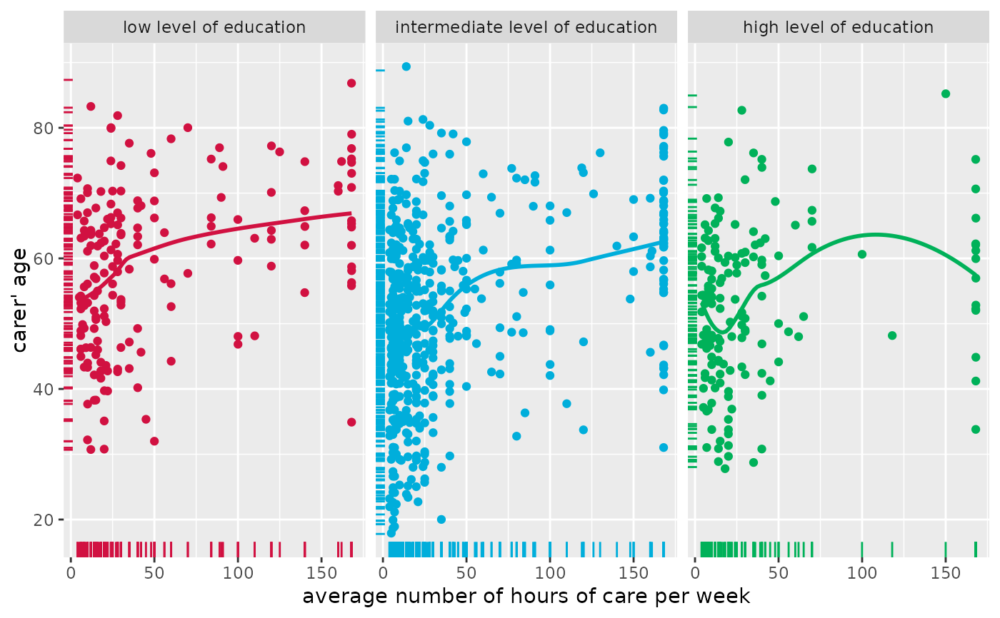
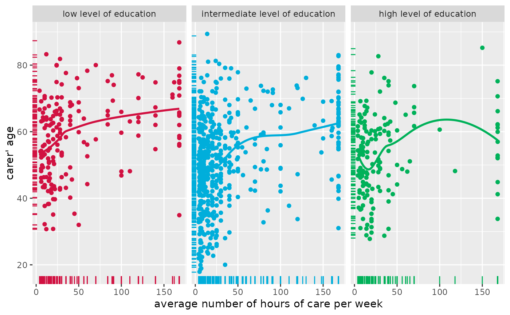

Display scatter plot of two variables. Adding a grouping variable to the scatter plot is possible. Furthermore, fitted lines can be added for each group as well as for the overall plot.
Usage
plot_scatter(
data,
x,
y,
grp,
title = "",
legend.title = NULL,
legend.labels = NULL,
dot.labels = NULL,
axis.titles = NULL,
dot.size = 1.5,
label.size = 3,
colors = "metro",
fit.line = NULL,
fit.grps = NULL,
show.rug = FALSE,
show.legend = TRUE,
show.ci = FALSE,
wrap.title = 50,
wrap.legend.title = 20,
wrap.legend.labels = 20,
jitter = 0.05,
emph.dots = FALSE,
grid = FALSE
)Arguments
- data
A data frame, or a grouped data frame.
- x
Name of the variable for the x-axis.
- y
Name of the variable for the y-axis.
- grp
Optional, name of the grouping-variable. If not missing, the scatter plot will be grouped. See 'Examples'.
- title
Character vector, used as plot title. By default,
response_labelsis called to retrieve the label of the dependent variable, which will be used as title. Usetitle = ""to remove title.- legend.title
Character vector, used as legend title for plots that have a legend.
- legend.labels
character vector with labels for the guide/legend.
- dot.labels
Character vector with names for each coordinate pair given by
xandy, so text labels are added to the plot. Must be of same length asxandy. Ifdot.labelshas a different length, data points will be trimmed to matchdot.labels. Ifdot.labels = NULL(default), no labels are printed.- axis.titles
character vector of length one or two, defining the title(s) for the x-axis and y-axis.
- dot.size
Numeric, size of the dots that indicate the point estimates.
- label.size
Size of text labels if argument
dot.labelsis used.- colors
May be a character vector of color values in hex-format, valid color value names (see
demo("colors")) or a name of a pre-defined color palette. Following options are valid for thecolorsargument:If not specified, a default color brewer palette will be used, which is suitable for the plot style.
If
"gs", a greyscale will be used.If
"bw", and plot-type is a line-plot, the plot is black/white and uses different line types to distinguish groups (see this package-vignette).If
colorsis any valid color brewer palette name, the related palette will be used. UseRColorBrewer::display.brewer.all()to view all available palette names.There are some pre-defined color palettes in this package, see
sjPlot-themesfor details.Else specify own color values or names as vector (e.g.
colors = "#00ff00"orcolors = c("firebrick", "blue")).
- fit.line, fit.grps
Specifies the method to add a fitted line accross the data points. Possible values are for instance
"lm","glm","loess"or"auto". IfNULL, no line is plotted.fit.lineadds a fitted line for the complete data, whilefit.grpsadds a fitted line for each subgroup ofgrp.- show.rug
Logical, if
TRUE, a marginal rug plot is displayed in the graph.- show.legend
For Marginal Effects plots, shows or hides the legend.
- show.ci
Logical, if
TRUE), adds notches to the box plot, which are used to compare groups; if the notches of two boxes do not overlap, medians are considered to be significantly different.- wrap.title
Numeric, determines how many chars of the plot title are displayed in one line and when a line break is inserted.
- wrap.legend.title
numeric, determines how many chars of the legend's title are displayed in one line and when a line break is inserted.
- wrap.legend.labels
numeric, determines how many chars of the legend labels are displayed in one line and when a line break is inserted.
- jitter
Numeric, between 0 and 1. If
show.data = TRUE, you can add a small amount of random variation to the location of each data point.jitterthen indicates the width, i.e. how much of a bin's width will be occupied by the jittered values.- emph.dots
Logical, if
TRUE, overlapping points at same coordinates will be becomme larger, so point size indicates amount of overlapping.- grid
Logical, if
TRUE, multiple plots are plotted as grid layout.
Value
A ggplot-object. For grouped data frames, a list of ggplot-objects for each group in the data.
Examples
# load sample date
library(sjmisc)
library(sjlabelled)
data(efc)
# simple scatter plot
plot_scatter(efc, e16sex, neg_c_7)
 # simple scatter plot, increased jittering
plot_scatter(efc, e16sex, neg_c_7, jitter = .4)
# simple scatter plot, increased jittering
plot_scatter(efc, e16sex, neg_c_7, jitter = .4)
 # grouped scatter plot
plot_scatter(efc, c160age, e17age, e42dep)
# grouped scatter plot
plot_scatter(efc, c160age, e17age, e42dep)
 # grouped scatter plot with marginal rug plot
# and add fitted line for complete data
plot_scatter(
efc, c12hour, c160age, c172code,
show.rug = TRUE, fit.line = "lm"
)
#> `geom_smooth()` using formula = 'y ~ x'
# grouped scatter plot with marginal rug plot
# and add fitted line for complete data
plot_scatter(
efc, c12hour, c160age, c172code,
show.rug = TRUE, fit.line = "lm"
)
#> `geom_smooth()` using formula = 'y ~ x'
 # grouped scatter plot with marginal rug plot
# and add fitted line for each group
plot_scatter(
efc, c12hour, c160age, c172code,
show.rug = TRUE, fit.grps = "loess",
grid = TRUE
)
#> `geom_smooth()` using formula = 'y ~ x'

# grouped scatter plot with marginal rug plot
# and add fitted line for each group
plot_scatter(
efc, c12hour, c160age, c172code,
show.rug = TRUE, fit.grps = "loess",
grid = TRUE
)
#> `geom_smooth()` using formula = 'y ~ x'
